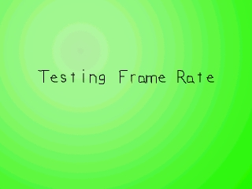

Regulating Frame Rate

Last Updated 2/24/14
What may run on your computer at 60 FPS, may run on someone else's at 200 FPS. Since speed varies from computer to computer, you're going to have to regulate frame rate to keep the game from running too fast. If a game runs too fast it becomes unplayable. To prevent that you must cap the frame rate.This tutorial teaches you just that.
A Capping Frame Rate tutorial with SDL 2 is now available.
//The frames per second
const int FRAMES_PER_SECOND = 20;
We define our frames per second as a global constant.
//Keep track of the current frame
int frame = 0;
//Whether or not to cap the frame rate
bool cap = true;
//The frame rate regulator
Timer fps;
Here are some variables declared in the main() function.
The "frame" variable keeps track of how many frames have been animated, which is important for knowing where to blit the message surface in this demo program.
There's also the "cap" variable which keeps track of whether the user wants to cap the frame rate.
Then we declare a timer object which we use to cap the frame rate.
Then we declare a timer object which we use to cap the frame rate.
//Generate the message surfaces
message = TTF_RenderText_Solid( font, "Testing Frame Rate", textColor );
Now we render the message surface that will move across the screen.
//While the user hasn't quit
while( quit == false )
{
//Start the frame timer
fps.start();
Now we enter our main loop. At the beginning of every frame, we have to start our frame timer.
//While there's events to handle
while( SDL_PollEvent( &event ) )
{
//If a key was pressed
if( event.type == SDL_KEYDOWN )
{
//If enter was pressed
if( event.key.keysym.sym == SDLK_RETURN )
{
//Switch cap
cap = ( !cap );
}
}
//If the user has Xed out the window
else if( event.type == SDL_QUIT )
{
//Quit the program
quit = true;
}
}
Here we do our event handling.
Basically this turns the FPS cap on/off when the user presses enter, and quits the program when the user wants to X out.
You typically don't need a variable to turn the frame regulation on/off when you're capping the frame rate in an actual game, but it's here in this program so you can see the difference between regulated and unregulated frame rate.
You typically don't need a variable to turn the frame regulation on/off when you're capping the frame rate in an actual game, but it's here in this program so you can see the difference between regulated and unregulated frame rate.
//Apply the background
apply_surface( 0, 0, background, screen );
//Apply the message
apply_surface( ( SCREEN_WIDTH - message->w ) / 2, ( ( SCREEN_HEIGHT + message->h * 2 ) / FRAMES_PER_SECOND ) * ( frame % FRAMES_PER_SECOND ) - message->h, message, screen );
Then we apply the background and message surface.
Don't worry about all that coding that went into blitting the message surface. It was basically a shorter way of doing:
if( frame % FRAMES_PER_SECOND == 0 )
{
//blit here
}
if( frame % FRAMES_PER_SECOND == 1 )
{
//blit there
}
etc, etc.
Don't worry about all that coding that went into blitting the message surface. It was basically a shorter way of doing:
if( frame % FRAMES_PER_SECOND == 0 )
{
//blit here
}
if( frame % FRAMES_PER_SECOND == 1 )
{
//blit there
}
etc, etc.
//Update the screen
if( SDL_Flip( screen ) == -1 )
{
return 1;
}
//Increment the frame counter
frame++;
Then we update the screen and increment the frame counter.
Now we've finished everything we needed to do for this frame.
Now we've finished everything we needed to do for this frame.
//If we want to cap the frame rate
if( ( cap == true ) && ( fps.get_ticks() < 1000 / FRAMES_PER_SECOND ) )
{
//Sleep the remaining frame time
SDL_Delay( ( 1000 / FRAMES_PER_SECOND ) - fps.get_ticks() );
}
This is where we do the actual frame rate capping.
When we started the frame, we started a timer to keep track of how much time it took to output this frame. In order for this program not to run too fast, each frame must take a certain amount of time. Since 20 frames are being shown per second, each frame must take no less than 1/20th of a second. If the frame rate is at 60 FPS, each frame must take no less than 1/60th of a second. Since this demo is running at 20 FPS, that means we should spend 50 milliseconds (1000 milliseconds / 20 frames) per frame.
To regulate the frame rate, first we check if the frame timer is less than the time allowed per frame. If it's more, it means we're either on time or behind schedule so we don't have time to wait. If it is less, then we use SDL_Delay() to sleep the rest of the frame time.
So if the frame timer in this program is at 20 milliseconds we sleep for 30 milliseconds. If the frame timer is at 40 milliseconds, we sleep for 10 milliseconds, etc, etc.
When we started the frame, we started a timer to keep track of how much time it took to output this frame. In order for this program not to run too fast, each frame must take a certain amount of time. Since 20 frames are being shown per second, each frame must take no less than 1/20th of a second. If the frame rate is at 60 FPS, each frame must take no less than 1/60th of a second. Since this demo is running at 20 FPS, that means we should spend 50 milliseconds (1000 milliseconds / 20 frames) per frame.
To regulate the frame rate, first we check if the frame timer is less than the time allowed per frame. If it's more, it means we're either on time or behind schedule so we don't have time to wait. If it is less, then we use SDL_Delay() to sleep the rest of the frame time.
So if the frame timer in this program is at 20 milliseconds we sleep for 30 milliseconds. If the frame timer is at 40 milliseconds, we sleep for 10 milliseconds, etc, etc.